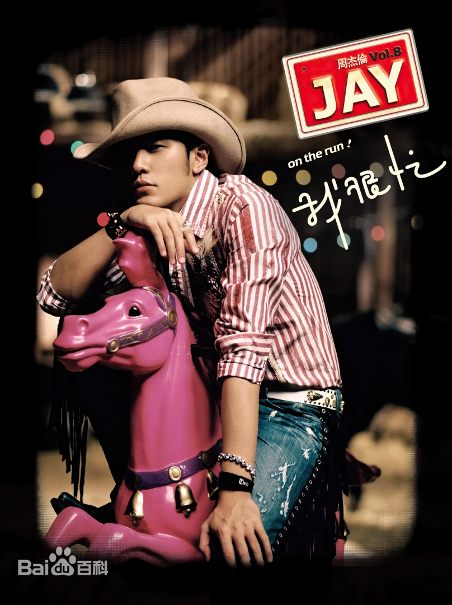

《青花瓷》是周杰伦2008年创作的一首歌曲，灵感来源于中国古典陶瓷艺术——青花瓷。 这首歌以青花瓷的精美和意韵为象征，创造了一个充满诗意的音乐世界。
歌词运用了大量的古典意象，如"素胚勾勒出青花笔锋转折"、"月明中孤美的窖"等， 将爱情比作精美的青花瓷，表现了爱情的细腻、脆弱而又永恒的特点。 整首歌词如同一幅工笔画，每一句都充满了东方美学的韵味。
这首歌采用了传统民族乐器与现代编排的结合，古筝、琵琶等中国传统乐器的加入， 为歌曲增添了浓厚的东方特色。周杰伦温柔而富有意境的唱腔， 更是将这个故事演绎得淋漓尽致。
《青花瓷》不仅是一首流行歌曲，更是对中国古典文化的一种创新诠释。 它证明了流行音乐可以融合传统文化元素，创造出既现代又经典的艺术作品。 这首歌获得了众多音乐奖项的认可，成为了周杰伦最受欢迎的歌曲之一。